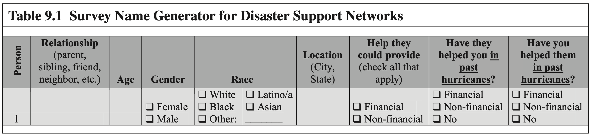
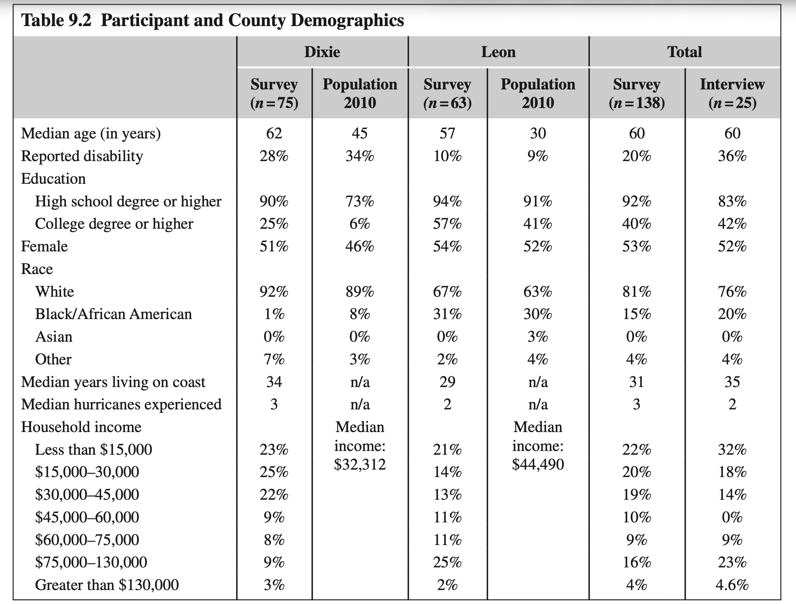
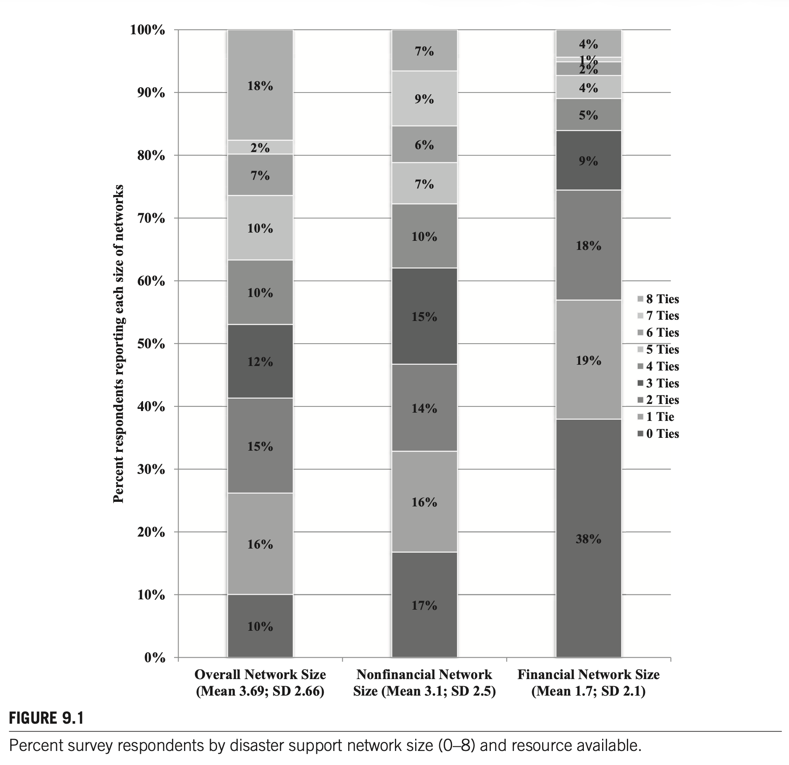
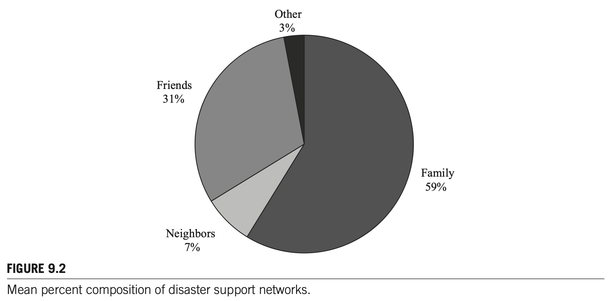
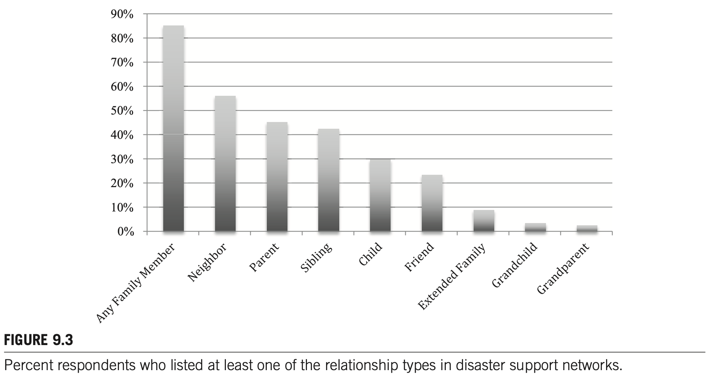
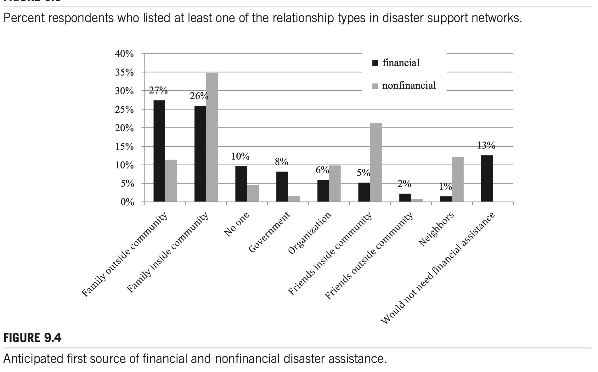
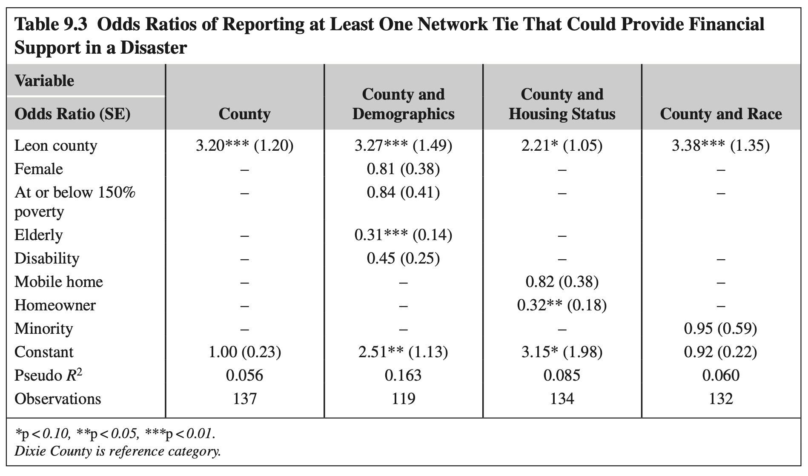

제9장 가족의 부담: 재난 다발 지역 플로리다 주민들이 인지하는 개인 재난 지원 사회연결망 자원
THE FAMILY’S BURDEN: PERCEIVED SOCIAL NETWORK RESOURCES FOR INDIVIDUAL DISASTER ASSISTANCE IN HAZARD-PRONE FLORIDA
1. 서론 및 이론적 배경
pp. 127–129재난 시 비공식 사회연결망의 결정적 역할: "진정한 최초 대응자"
친구, 가족, 직장 동료, 이웃 등은 비밀을 나누고 정서적 지지를 교환하는 개인 네트워크(Personal Networks)를 형성합니다(Paxton, 1999). 재난 문헌에 따르면 가족, 친구, 이웃은 공공 긴급구조기관이 현장에 도착하기 전 가장 먼저 개입하는 "진정한 최초 대응자(real first responders)"입니다.
이들은 재난 경보 메시지 전파, 구호물품 조달, 긴급 수색 및 구조(Search & Rescue), 대피 피난처 제공, 잔해 제거 및 주택 수리, 그리고 막대한 정서적·재정적 지원을 수행합니다(Elliott et al., 2010; Hurlbert et al., 2000).
(객관적 자원 유무와 별개로 지각된 지지가 심리적 안정 견인)"] B["2. 네트워크의 자원 깊이(Resource Depth) 진단
(내부 자원으로 극복 가능한지, 공적 외부 개입 필수적인지 식별)"] C["3. 실제 구호 요청 행동의 사전 규정
(네트워크에 자원이 없다고 믿으면 실제 위기 시 도움 요청 포기)"] D["4. 치료적 공동체의 환상 검증 및 1차 방어선 식별
(재난 시 교회/단체보다 '가족이 우선'이라는 냉정한 현실 증명)"] end
2. 연구 방법 및 표본 (Data and Methods)
pp. 129–131플로리다주 2개 카운티의 다중 생태학적 비교 설계
플로리다는 6월부터 10월까지 허리케인 시즌이 이어지며 토네이도, 홍수, 산불이 빈발하는 대표적 재난 취약 지역입니다. 본 연구는 동일한 자연재해 위험에 노출되어 있으나 사회경제적 환경이 대조적인 두 카운티를 비교 대상으로 선정했습니다:
• 높은 인구밀도, 높은 교육 수준 (대졸 57%)
• 중위 가계소득: $44,490
• 극히 낮은 인구밀도, 취약한 산업 기반 (고졸 이하 다수)
• 중위 가계소득: $32,312
재난 지원 이름 생성 질문법 (Name Generator)
설문 참여자들에게 재난 발생 시 도움을 요청할 대상(Alters)을 최대 8명까지 열거하도록 유도하였으며, 각 인물과의 관계, 연령, 거주 위치, 인종/성별, 그리고 제공 가능한 자원의 유형(재정적 지원 vs 비재정적 지원)을 분리하여 측정했습니다.


3. 재난 지원 네트워크: 규모와 자원
pp. 131–134자원 유형별 네트워크 규모의 극심한 비대칭성
조사 결과, 개인들이 재난 시 기댈 수 있는 전체 네트워크 규모는 평균 3.7명이었으나, 지원받을 수 있는 자원의 성격(재정적 vs 비재정적)에 따라 극단적인 양극화와 결핍이 드러났습니다.

• 물리적 잔해 제거, 대피소 공유, 임시 거처, 발전기 공유 등 비교적 원활한 연결망 형성.
• 재난 긴급 복구 자금이나 모텔 투숙비를 빌릴 수 있는 대상이 단 1명도 없는 가구가 무려 40%에 달함.
4. 재난 지원 네트워크 구성과 "가족의 부담"
pp. 134–137네트워크 구성: 압도적인 가족 중심성 (Figure 9.2 & 9.3)
최소 1명 이상의 네트워크를 보고한 응답자들의 관계 구성을 분석한 결과, 가족(Family)이 전체 네트워크의 59%를 차지하여 지배적이었습니다. 친구는 31%, 이웃은 7%, 기타 단체는 3%에 불과했습니다.


1차 지원처 선택의 극단적 분화: 자원 유형 vs 공간 위치 (Figure 9.4)
응답자들에게 재난 시 재정적 지원과 비재정적 지원을 가장 먼저 요청할 1차 자원(First Source)을 질문한 결과, 연결망 동원 기제가 완벽하게 양분되었습니다.

(Relationship-driven)"] --> F2["오직 혈연 가족(Family 53%)에 집중
(로컬 가족 27% + 원거리 가족 26%)"] F2 --> F3["이웃(1%), 친구(2%), 정부(미미)
→ 돈을 빌리는 것은 타인에게 큰 부담"] end subgraph NonFin["비재정 지원 (Nonfinancial Resource)"] direction TB N1["지리적 근접성
(Location-driven)"] --> N2["현장 인접 로컬 연계에 분산
(로컬 가족 35%, 이웃 26%, 친구 13%)"] N2 --> N3["피난처 제공, 잔해 제거, 응급 복구
→ 물리적으로 가까운 자가 최우선"] end
5. 사회경제적 지위(SES) 및 사회적 취약성과 지지망 불평등
pp. 137–139로지스틱 회귀분석: 재정 지원망 보유 결정요인 (Table 9.3)
연구진은 재난 시 최소 1명 이상의 재정 지원 연계를 보유하고 있는지 여부(1=있음, 0=없음)를 종속변수로 다중 로지스틱 회귀분석을 실시했습니다.

| 독립변수 (Variables) | 모형 1: 카운티 | 모형 2: 인구학적 결합 | 모형 3: 주거형태 결합 | 모형 4: 인종 결합 |
|---|---|---|---|---|
| 레온 카운티 거주 (Leon County) | 3.20*** (1.20) | 3.27*** (1.49) | 2.21* (1.05) | 3.38*** (1.35) |
| 여성 (Female) | — | 0.81 (0.38) | — | — |
| 빈곤선 150% 이하 (Poverty) | — | 0.84 (0.41) | — | — |
| 노인 (Elderly, 65세 이상) | — | 0.31*** (0.14) | — | — |
| 장애 가구원 (Disability) | — | 0.45 (0.25) | — | — |
| 이동식 주택 거주 (Mobile Home) | — | — | 0.82 (0.38) | — |
| 자가 주택 소유자 (Homeowner) | — | — | 0.32** (0.18) | — |
| 소수인종 (Minority) | — | — | — | 0.95 (0.59) |
| Pseudo $R^2$ / 관측치(N) | 0.056 (N=137) | 0.163 (N=119) | 0.085 (N=134) | 0.060 (N=132) |
질적 인터뷰 분석: 계층별 사회자본 동원의 질적 양극화
6. 논의 및 학술적 시사점
pp. 139–1417. [부록] 박사학위 논문 선행연구 검토 9단계 표준 템플릿
Academic Template| 순서 / 단계 | 핵심 개념 및 질문 | Chapter 9 학술 논문 분석 매핑 |
|---|---|---|
| 1. 연구배경 | 사후 회상 편향 극복 및 사전 연결망 인식 규명 | 재난 시 비공식 지지망이 필수적이나 기존 연구는 사후 회상에 의존. 상시 위험 지역 주민들의 재난 대비 사전 인지 자원 및 취약성 실증 필요. |
| 2. 이론적 개념 | 친족 배태성, 사회자본, 가족의 부담 | 제도 붕괴 시 혈연 안전망(Kin embeddedness), 자원 동원 불평등, 화폐적 지원의 혈연 배타성(The Family's Burden), 인지된 사회적 지지. |
| 3. 연구목적 | 규모, 구성, 자원별 분화 및 SES 영향 규명 | 플로리다 2개 카운티 주민의 재난 지지망 규모/구성 파악, 재정 vs 비재정 자원 분화 규명, 취약계층의 재정망 결핍 실증. |
| 4. 연구방법 | 혼합연구방법론 (설문 N=138, 면담 N=25) | Ego-Network Name Generator (최대 8인), 층화 군집 및 무작위 표본추출, 로지스틱 회귀분석 및 질적 주제분석. |
| 5. 연구결과 | 평균 3.7명, 재정 0명(40%), 가족 59% | 전체 3.7명(비재정 3.1명 vs 재정 1.7명). 가족 59%, 친구 31%, 이웃 7%. 노인층 재정망 보유 승산 0.31배 급감. |
| 6. 핵심 발견 | 재정 지원의 가족 전가 및 이중 취약성 | 돈을 빌리는 것은 오직 가족의 짐. 노인 및 농촌 빈곤층은 경제적 빈곤과 지지망 결핍이 중첩되는 이중 취약성 직면. |
| 7. 연구의 한계 | 표본 크기 및 사전-사후 일치도 미검증 | 플로리다 2개 카운티 138명으로 일반화 한계, Name Generator 8인 상한에 따른 하향 추정 가능성, 실제 재난 후 수혜와의 추적 패널 부재. |
| 8. 이론적 시사점 | 강한 유대의 회복력 견인 및 치료공동체 재정립 | 위기 시 Granovetter의 약한 유대가 아닌 강한 친족 유대가 작동. 치료적 공동체 이론의 범위를 비재정적 지원으로 한정 정교화. |
| 9. 후속 연구 | 사전-사후 패널 설계 및 1인 가구 안전망 연구 | 사전 인지와 사후 실측을 연계한 종단 패널 연구, 1인 가구 급증에 따른 공공 대리 안전망(Proxy Safety Net) 제도화 연구. |
8. ★ [내 연구 적용] 취약계층 보호를 위한 소방·지자체 현장 대응망 및 '가족 부재' 고립 가구 선제적 구호 프로토콜
소방 현장 환류문제의식: 신고 기반 대응(Reactive)의 한계와 사적 지지망 결핍 가구의 참사
Chapter 9의 실증 분석은 "재난 시 실질적 생존·재정 지원은 전적으로 가족에게 지워지며, 가족이 없는 독거노인·빈곤층은 사적 연결망에서 완전히 배제된다"는 엄중한 현실을 밝혔습니다. 현행 소방의 '119 신고 접수 후 출동' 방식은 지지망이 단절되어 구조 요청조차 못 하는 고립 가구를 놓칠 수밖에 없습니다(신림동 반지하 참사, 시카고 폭염 참사).
(비상대피 도우미 유무, 상주 친족 유무, 119안심콜 연계)"] --> P2["[2단계] 네트워크 결핍 지수(NDI) 기반 완전 고립가구 공간 군집화
(가족 0명, 이웃 0명인 고위험 가구 GIS 매핑)"] P2 --> P3["[3단계] 소방-지자체 1:1 '공공 대리 혈연(Proxy Family)' 결연
(의용소방대원 및 119생활안전대원을 전담 매칭)"] P3 --> P4["[4단계] 기상특보 발령 시 선제적 방문 및 대피 유도
(경보 전파, 현장 방문, 긴급 대피소 선제적 이송)"] P4 --> P5["[5단계] 재난 직후 긴급구호 및 공적 금융자원 직결
(지자체 긴급생계비, 재해구호기금, 임시주거 바우처 연계)"] P5 --> P6["[6단계] Q방법론 및 실증 효과성 다원적 평가
(수혜 주민 및 소방대원의 주관적 안전체감도 유형화)"]
현장 맞춤형 핵심성과지표 (KPI 가중치: 고유 70% / 협업 30%)
교수님 심화 지도 원칙에 따라 소방 관서 통제 가능한 고유 지표(70%)와 유관기관 협업 지표(30%)를 엄격히 분배하고 법적 조문을 강제 매핑했습니다.
| 분류 | 단계 | 가중치 | 핵심 성과지표 (KPI) | 산출 공식 및 목표치 | 판단 근거 (서브노트 매핑) | 관련 법적 근거 |
|---|---|---|---|---|---|---|
| 소방 고유 (70%) |
예방 | 25% | 사적 지지망 결핍 고립가구 발굴률 | $\frac{\text{발굴된 무의탁·고립가구 수}}{\text{관내 추정 취약가구 수}} \times 100 \ge 90\%$ | Table 9.3 (노인층 재정망 승산비 0.31배 급감 반영) | 소방기본법 제16조의2 (소방안전지원활동) |
| 대비 | 25% | 119안심콜 및 공공대리인 등록률 | $\frac{\text{공공대리인 지정 등록 완료 가구}}{\text{총 발굴 고립가구}} \times 100 \ge 95\%$ | Figure 9.1 (40% 무자원 가구 공적 대체망 구축) | 119구조·구급법 제2조의2 (119안심콜서비스 운영) |
|
| 대응 | 20% | 고립가구 선제적 피난 유도율 | $\frac{\text{특보 시 현장 방문 피난 완료 건}}{\text{피난 권고대상 고립가구}} \times 100 \ge 85\%$ | Figure 9.4 (비재정 지원의 공간 근접성 극대화) | 재난안전기본법 제40조 (대피명령 및 현장조치) |
|
| 기관 협업 (30%) |
대응 | 15% | 의용소방대-이·통장 매칭 출동률 | $\frac{\text{민관 공동 현장 확인 출동 건}}{\text{취약가구 비상소집 건수}} \times 100 \ge 90\%$ | Figure 9.2 (이웃 7% 한계 극복을 위한 준공식 조직화) | 의용소방대법 제7조 (임무: 주민 대피 및 구호) |
| 복구 | 15% | 긴급구호 및 주거복구 연계율 | $\frac{\text{지자체 긴급지원금/임시주거 배정 건}}{\text{소방 의뢰 고립가구 건수}} \times 100 \ge 95\%$ | p. 138 (저소득층 공적 금융안전망 직접 연결) | 재해구호법 제4조·제7조 (임시주거 및 물품 지원) |
- 재난 및 안전관리 기본법 제4조(국가 등의 책무): 안전취약계층(어린이, 노인, 장애인 등)의 재난 안전 확보를 위한 맞춤형 대책 수립 의무화.
- 소방기본법 제16조의2(소방안전지원활동): 소방관서장의 재난 취약계층 주거 안전 확보 및 물품 보급, 사전 안전점검 법적 의무.
- 119구조·구급에 관한 법률 제2조의2: 119안심콜 서비스 등 취약계층 사전 등록 DB 기반의 맞춤형 출동체계 확립.
- 의용소방대 설치 및 운영에 관한 법률 제7조(임무): 화재·재난 시 취약계층 대피 유도 및 현장 구호활동 임무 명시.